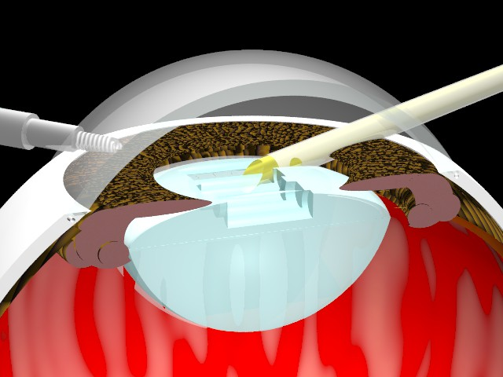
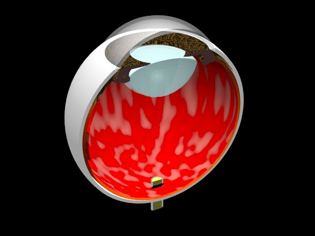

POV-Ray Object Collection
|  |
This model was developed by Israel in 1997 to illustrate the procedures for conducting cataract surgery by Phacoemulcification, which is now the most common procedure used for cataract surgery. The model therefore incorporates a Phaco probe and an Infusion tube, but you can simply switch these off if you wish to use the model for other purposes. The model cuts channels into the lens, representing the emulsification of the cataracts during the procedure. These cuts can also easily be switched off, leaving the lens intact. The model can slice each component of the eye in half. This sectioning can be switched off for whichever components you want.
You can add the Eye Section to your scene file by including the "eyesection.inc" file.
The file returns a single object centred at the origin with the front of the eye pointing straight up. The eye has a radius of about 20 POV-Ray units. The top of the cornea is the highest part of the model at a height of about 28 POV-Ray units. You can wrap the returned object in an object statement and transform it as required to fit into your scene. For example:
You can control or suppress the elements specific to the Phacoemulcification procedure by declaring any of the following variables before including the 'eyesection.inc' file in your scene: 
| EyeSection_CutLens | Set to 'true', 'yes' or '1' to add cylindrical cuts to the surface of the lens. Set to 'false', 'no' or '0' to suppress the cuts. |
|---|---|
| EyeSection_PhacoProbeDepth | Set to a value between '0' and '1', where '0' suppresses the probe completely and any other value up to '1' determines how far into the eye the probe is inserted. |
| EyeSection_InfusionTubeDepth | Set to a value between '0' and '1', where '0' suppresses the tube completely and any other value up to '1' determines how far into the eye the tube is inserted. |
The following example suppresses all 3 of the features specific to the Phacoemulcification procedure, as illustrated in the image on the right.
You can control which parts of the eye are shown in section and which parts are complete by setting any of the following variables, where 'true', 'yes' or '1' results in that part being shown in section and 'false', 'no' or '0' shows that part of the eye without sectioning it.
| EyeSection_SectionLens | The Lens is just behind the Iris and is usually transparent, but turns opaque when a cataract develops. The lens changes shape to enable images to be brought into sharp focus on the Retina. |
|---|---|
| EyeSection_SectionIris | The Iris is the colored disk that dilates or contracts to regulate the amount of light entering the eye. |
| EyeSection_SectionOra | The Ora Serrata covers the front inner surface of the eye where it transitions from the non-photosensitive area of the retina to the photosensitive Retina. |
| EyeSection_SectionCornea | The Cornea is the transparent dome covering the front of the eye. This provides a powerful refracting surface, delivering 2/3 of the eye's total focusing power. |
| EyeSection_SectionChoroid | The Choroid consists of layers of blood vessels behind the retina. |
| EyeSection_SectionRetina | The Retina lines the back of the inside of the eye and incorporates a complex photosensitive structure that converts the image into signals that are sent down the optic nerve to the brain. |
| EyeSection_SectionSclera | The Sclera is the white outer shell of the eyeball. |
| EyeSection_SectionOpticNerve | The Optic Nerve carries visual signals to the brain. |
The following example suppresses the sectioning of the components of the eye except for the White outer enclosure (the Sclera). The result is illustrated in the image on the right.
The final assembly of the various components of the eye is performed in a short 'union' statement at the bottom of the 'eyesection.inc' file. You can completely suppress individual components by simply commenting out the corresponding lines from that 'union' statement.
Version 1.0 of the include file was adapted to conform to the naming conventions for the POV-Ray Object Collection by Chris Bartlett in September 2009. All identifiers are now prefixed with 'EyeSection_' and all file names start with 'eyesection'. The following additional changes were made: